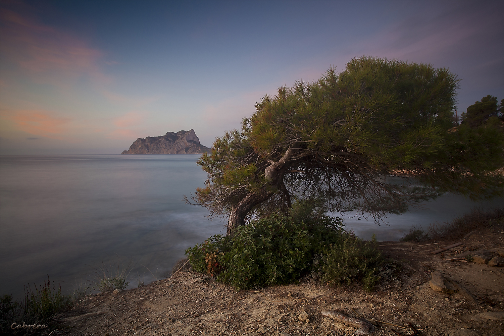
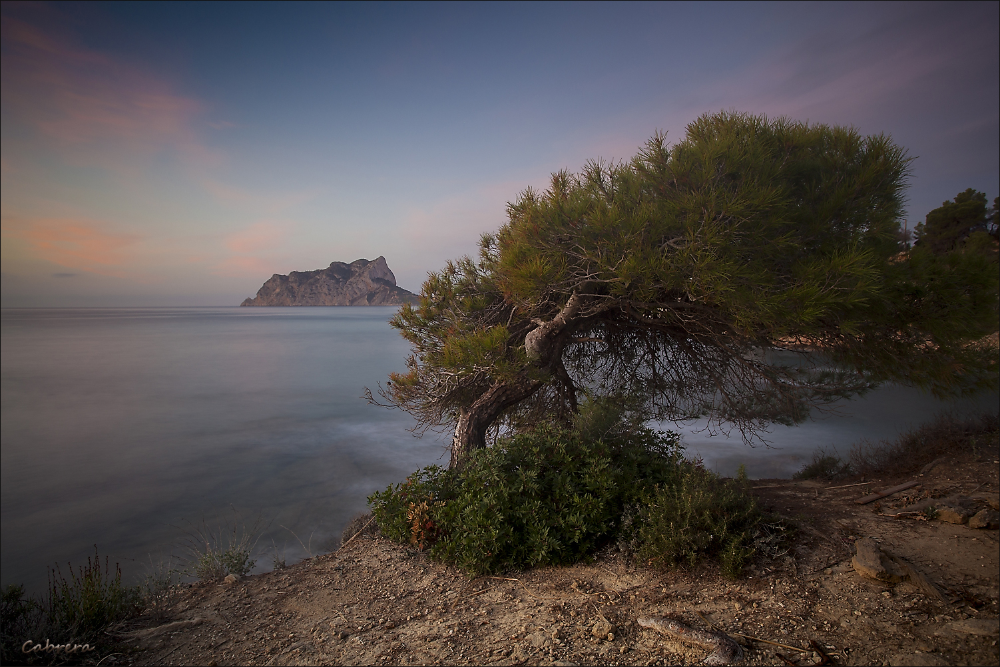

Benestar In Jalon Valley, cuenta con piscina al aire libre, jardín y terraza, dispone de alojamiento en Alcalalí con wifi gratis y vistas a la montaña.
La casa tiene parking privado gratis, está en una zona en la que se pueden practicar actividades como senderismo, pesca y snorkel.
Casa con aire acondicionado consta de 3 dormitorios, una sala de estar, una cocina totalmente equipada con nevera y cafetera, y 3 baños con bidet y ducha.
Hay toallas y ropa de cama en la casa. Se puede practicar ciclismo en los alrededores.
Terra Natura está a 45 km del alojamiento, y Parque Acuático Aqua Natura está a 46 km.
El aeropuerto (Aeropuerto de Alicante - Elche Miguel Hernández) está a 98 km.


 
